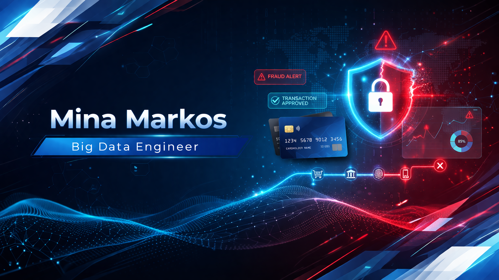

Data Engineering
Banking Fraud Detection Pipeline
A repository combines synthetic ATM events, streaming model-inference code, storage artifacts and dashboard evidence.
Educational integration prototype; runtime gaps
Kafka · Spark Streaming · HDFS · HBase · NiFi · Power BI
Executive Summary
Explore how suspicious transaction signals can move from streaming ingestion to analyst-facing outputs. A repository combines synthetic ATM events, streaming model-inference code, storage artifacts and dashboard evidence.
Business Context
This is an educational fraud-pipeline architecture, not a certified banking decision system. Synthetic transaction generation supports exploration without implying real customer deployment.
Technical Architecture
- Synthetic ATM producer → Kafka (legacy ZooKeeper deployment documented)
- Spark Streaming / model references → HDFS bronze / silver
- Documented NiFi transfer → HBase → Power BI artifacts
- Connector configs, model files and complete runtime need validation
Engineering Challenges
The streaming script references spark and configuration classes without defining them in that file. Its legacy pyspark.streaming.kafka API and model paths require a compatible runtime and artifacts. Container files and screenshots alone cannot prove end-to-end execution.
Architecture Decisions
The repository uses Kafka for event transport and separate storage/serving layers. The trade-off is a large operational surface for a learning project. A smaller stream-to-table baseline would be an alternative to evaluate, not an alternative known to have been evaluated by the author.
Implementation
Kafka producer files, a streaming script, a silver notebook, HBase DDL, NiFi screenshots and a Power BI file are present. README architecture and actual configuration must be reconciled before running; no successful integrated run is claimed.
Reliability and Security
Validate model/data lineage, replay correctness, offset handling, least-privilege access and false-positive cost before using any fraud output operationally. The README uses a legacy ZooKeeper design; this is not presented as a new KRaft deployment.
Business Value
Expected educational value: understand the ingestion-to-serving chain. Fraud detection accuracy, latency, throughput and avoided losses are unmeasured in this review.
Evidence and validation boundary
Status: Educational integration prototype; runtime gaps. Reviewed 22 November 2026.
Reviewed repository revision: ee0c5ac6954c. Code presence is distinct from executed runtime behavior.
- readme.md
- Kafka/kafka_source.py
- spark/streaming/streaming.py
- docker/docker-compose.yml
- hbase/DDL.sh
- powerbi/Fraud_Detection.pbix
Current local test outcomes and unexecuted checks. CI and test evidence is separated from production readiness; the validation record includes retrieved checks at the reviewed revision.

Future Improvements
Create reproducible dependencies and model fixtures, resolve runtime/configuration gaps, add integration tests and evaluate model error costs on an appropriately governed dataset.